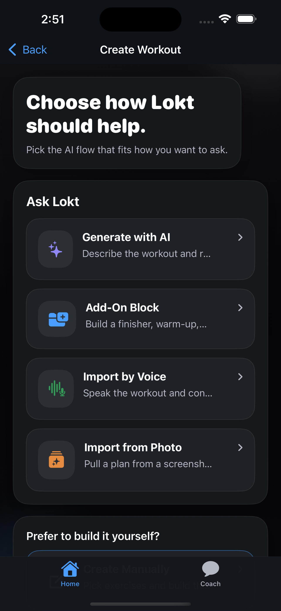
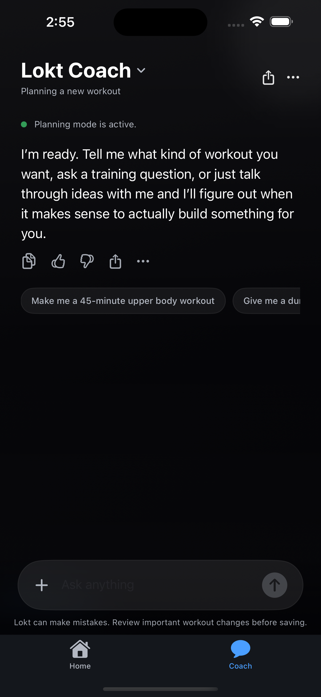
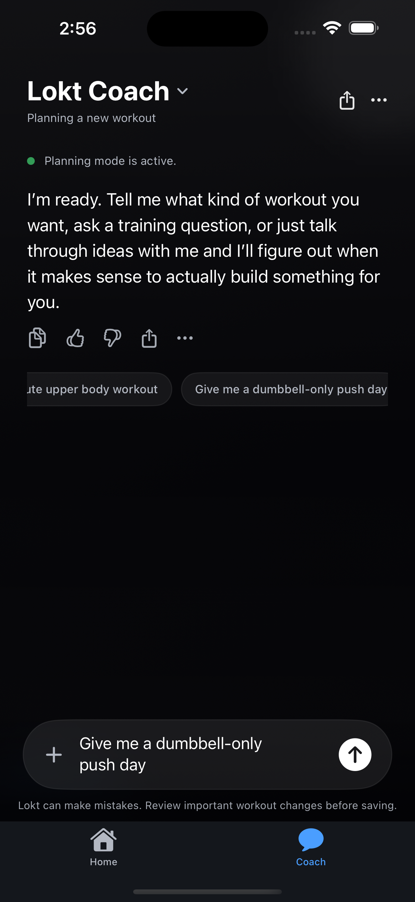
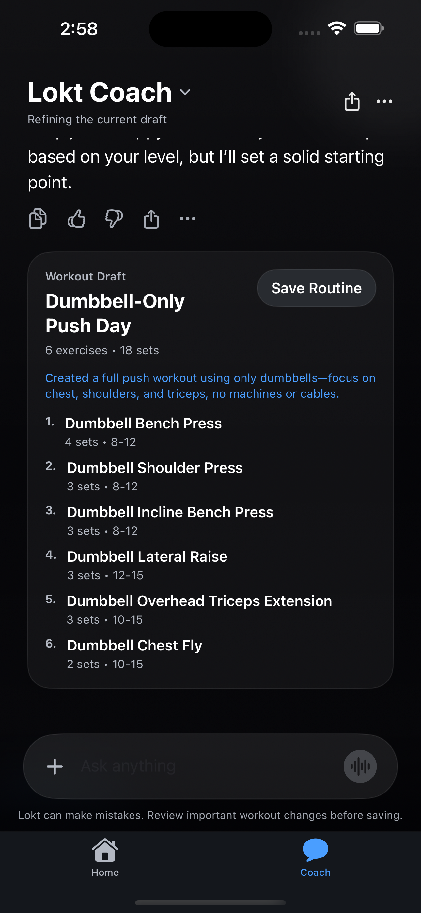

Ask
Describe the workout you want in plain English and get back a structured routine draft.
Built with Codex
Lokt turns text, voice, photo, and coach-style chat into editable workout drafts. Instead of bouncing between separate tools, users can ask for a workout, refine it like a conversation, and log it quickly once they start lifting.

Describe the workout you want in plain English and get back a structured routine draft.
Use voice or a photo to turn messy workout ideas into something clean, matched, and editable.
Talk to Lokt like a coach. It can explain choices, suggest swaps, or update the draft.
Once the workout starts, Lokt keeps logging fast with guided set entry, timers, and clean review-first flows.
Product Tour
These are real Lokt screens showing the main product story: start from the home flow, open the AI tools, jump into coach chat, and end on a structured workout draft.
The product starts with one clear idea: ask Lokt for a workout or build your own.

Text, voice, photo, and add-on flows are grouped together instead of feeling scattered.

Coach is its own dedicated chat-first experience, not just a hidden form inside another screen.

Suggested prompts make it easy to start a conversation without typing the whole request from scratch.

Lokt replies naturally, then turns the request into a real draft that users can review and save.
Why it stands out
Most workout apps either track well or answer questions well. Lokt tries to bridge that gap by letting users talk naturally while still turning the result into a real, structured workout they can review, edit, and actually use.
How I built it
Lokt is built as a SwiftUI iPhone app with a lightweight Node backend for AI routes. I used Codex heavily for product iteration, feature implementation, parsing flows, review screens, coach chat behavior, and UI polish across the app.